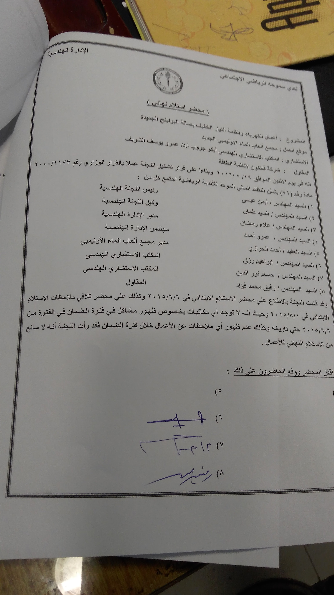
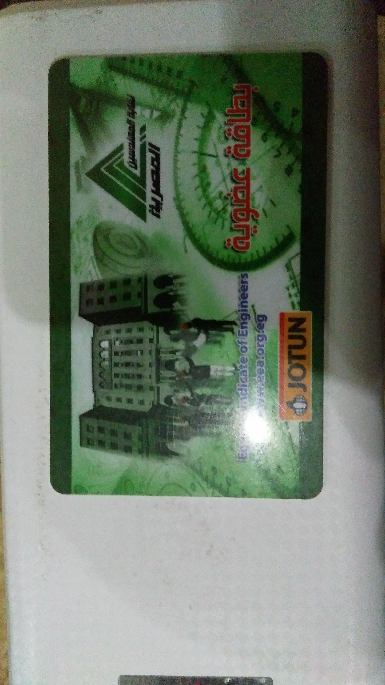
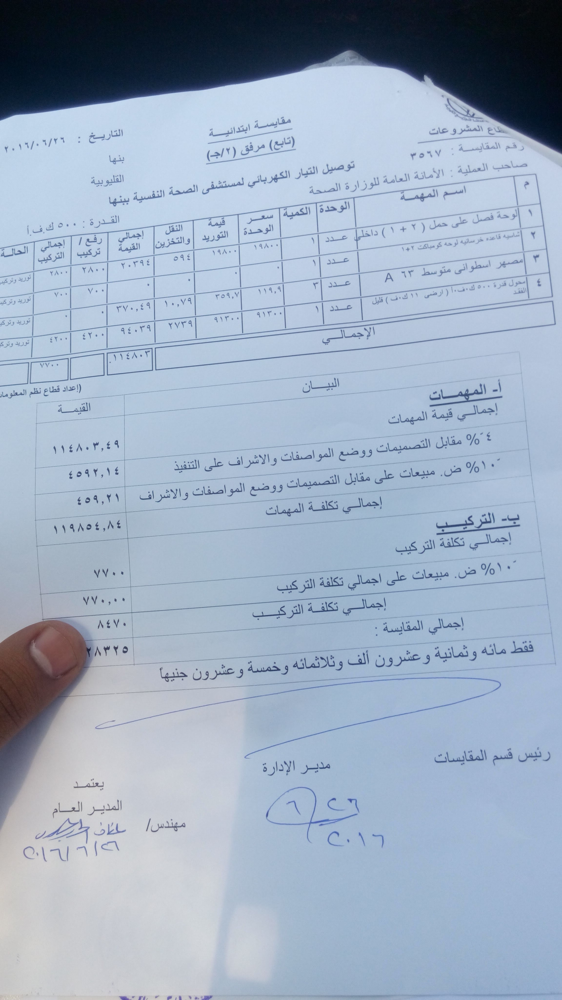

الملف التنفيذي
مدير تنفيذي متخصص في إدارة العمليات متعددة المواقع، وتصميم أنظمة CMMS، وإنشاءات قطاع الأغذية والمشروبات الكبرى.
الخبرات التقنية
شركاء النجاح
أشرفت على مشاريع هندسية ضخمة لكبرى العلامات التجارية في السوق


مدير عام الإدارة الهندسية
شركة بـ لبن (2023 - حتى الآن)
تصميم وتطبيق نظام صيانة مخصص لـ 200 موقع من الصفر، مما أدى لتخفيض الميزانية التشغيلية بنسبة 33%.
بناء مصنعي الكوكيز والشيكولاتة (Greenfield) وإعادة هيكلة وتطوير مصنع الألبان بالكامل.
مدير الإدارة الكهربائية
شركة العبد للأغذية (2015 - 2023)
تصميم وتشغيل أنظمة PLC/SCADA لخطوط الحلويات ونقلها من التشغيل اليدوي للآلي بشكل كامل.
المسؤول التقني المباشر لبناء الفروع الجديدة، التفاوض مع المقاولين، والإشراف التنفيذي.
بدايات المسيرة المهنية
إدارة التركيبات الكهربائية في بيئة إنتاج ضخمة للحفاظ على استمرارية العمل.
تصميم ومراجعة المخططات الهندسية وتقدير تكاليف المشاريع الإنشائية.
التعليم والشهادات
القيادة الاستراتيجية
تصميم مخططات شاملة (Blueprints) لإنشاء المصانع الكبرى من الصفر وحتى خطوط الإنتاج.
توفير مستمر لملايين الجنيهات من الميزانية التشغيلية (OpEx) عبر الأتمتة وأنظمة CMMS.
الشهادات والمسارات المتخصصة
- إدارة المشاريع الرشيقة (Agile)
- التخطيط والتنفيذ (Execution)
- أساسيات إدارة المشاريع
- شهادة Green Belt المعتمدة
- الاحتراف في Minitab
- تحسين العمليات الإنتاجية
- برمجة PLC Ladder Logic
- لوحات التوزيع الكهربائية
- محولات التردد (VFD)
معرض صور التنفيذ الهندسي



لقطات حية من التنفيذ والإشراف على التركيبات الكهروميكانيكية في المواقع والمصانع المختلفة.